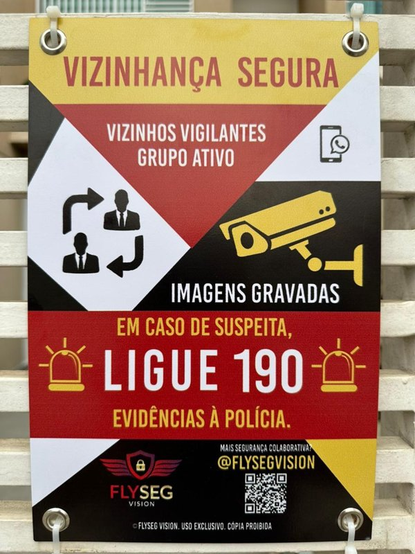

Segurança colaborativa
Segurança colaborativaVizinhança
Segura
O programa da FlySeg Vision que junta as câmeras de moradores, comércios e condomínios numa rede só, com a plataforma MWL.camera. Cada participante acompanha as câmeras compartilhadas num raio de 500 metros do seu endereço.

Como a sua rua entra no programa
PASSO 1
Reúna os vizinhos
Converse com a rua, o condomínio ou a associação. Quanto mais câmeras, maior a cobertura.
PASSO 2
Chame a FlySeg
Avaliamos as câmeras que já existem e instalamos o que faltar, como o totem ODL.camera.
PASSO 3
A rua entra na rede
Cada um acompanha pelo celular, e a rua recebe a placa Vizinhança Segura.
O que a rua ganha
👀Mais olhos na ruaCâmeras de todos, num raio de 500 m, ao vivo e com gravação.
🚨Evidências gravadasA ocorrência chega com a gravação anexada para quem está perto.
🗼Totem ODL.cameraSirene, giroflex e botão de emergência, em locação mensal.
🚓Forças de segurançaAs da região que aderirem veem as ocorrências no painel delas.
Dúvidas comuns
Quem vê a minha câmera?Só os participantes cadastrados no raio de 500 m, e só se você decidir compartilhar. Você pode parar quando quiser.
Preciso trocar as minhas câmeras?Nem sempre. A FlySeg avalia se as que você tem podem entrar na plataforma.
Quanto custa?Depende do que a rua já tem e do que vai instalar. A FlySeg passa o orçamento sem compromisso.